20 candidates for Emmet's technique library (session 3C, H-22). Each was found in your instruction books and ranked by how widely official models in the LDraw OMR join its key parts (1243 sets mined). Each picture is a render of my sketch of it in Emmet's DSL, which validates with no findings; an accepted sketch becomes the technique, with its tests and render, and a rejected one is dropped. Nothing is taken from the models' files or the books' pages (D-48). Every candidate starts as Accept: switch the ones you don't want, add a note if it helps, then copy your answers and paste them to Claude.
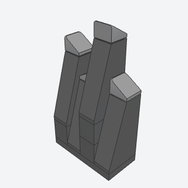
rock_spirePointed rock spires from tall 75° slopes, each tip capped with a cheese slope turned another way, side by side at different heights.
A builder reaches for it to stand sea stacks in the surf or a ragged ridge along a cliff top.
x, y, z, risers, color, cap, titlebatch-3/rock_spire.py4460b + 54200 + 3004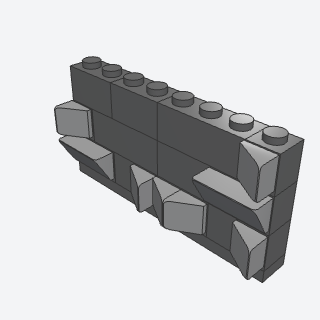
rock_facetA rock face broken into angled planes by cheese slopes pressed onto side studs, pointing up, down, left, or right.
A builder reaches for it to make any brick rock face look broken instead of flat.
x, y, z, length, rows, seed, color, facet, titlebatch-3/rock_facet.py87087 + 54200 + 11211 + 85984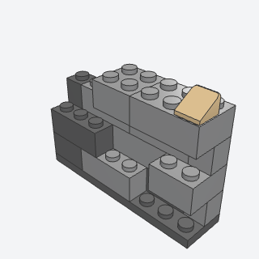
cliff_wallA cliff face of ordinary bricks whose courses step in and out by a stud, in mixed grays, with a ragged top.
A builder reaches for it for any cliff, quarry, or rocky base under a landscape.
x, y, z, length, rows, seed, colors, cap, titlebatch-3/cliff_wall.py3003 + 3004 + 54200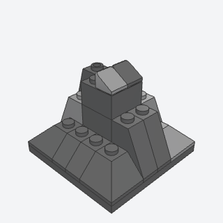
rock_outcropA lump of rock: a brick core leaned on all round by slopes of different steepness, with double-convex corners and cheese chips on top.
A builder reaches for it to drop a boulder or rocky outcrop anywhere on a baseplate.
x, y, z, height, seed, colors, titlebatch-3/rock_outcrop.py3045 + 60481a + 4460b + 3003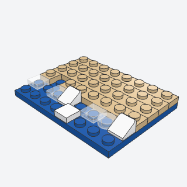
surf_lineA beach of tan plates on water with a wandering edge and broken white surf of tiles and cheese slopes at the waterline.
A builder reaches for it to edge any island, lake shore, or coastline.
x, y, z, length, depth, seed, sand, surf, titlebatch-3/surf_line.py3070b + 54200 + 98138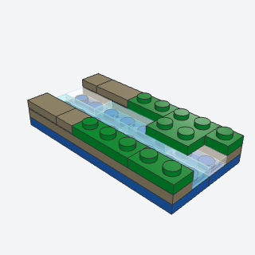
riverA stream of clear tiles over a blue bed, a plate below its banks, whose grass overhangs the water in places.
A builder reaches for it to run a river or stream across a layout.
Note: At large sizes it may use a 2 x 14 plate, made in Blue in only one or two sets.
x, y, z, length, width, seed, bed, water, mud, grass, titlebatch-3/river.py2431 + 3069b + 3460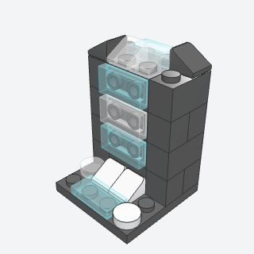
waterfallWater pouring over a rock lip and down the face as clear tiles hung on side studs, with white foam at the foot.
A builder reaches for it to put a waterfall on a cliff or into a river.
x, y, z, rows, color, water, foam, titlebatch-3/waterfall.py11211 + 3069b + 54200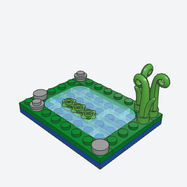
pondA small sunken pond of clear tiles with rounded corners over a blue bed, with lily pads, rim stones, and reeds.
A builder reaches for it for a garden or park pond, or a pool in a forest scene.
Note: At large sizes it may use a 2 x 14 plate, made in Blue in only one or two sets.
x, y, z, length, depth, seed, bed, water, ground, stone, titlebatch-3/pond.py25269 + 33291 + 15279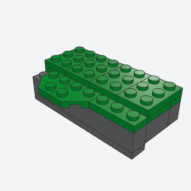
grass_edgeA grassy top on a cliff whose edge wanders, overhanging in rounded tongues and stopping short in places, locked by a second plate layer.
A builder reaches for it to finish the top of any cliff or rock wall naturally.
x, y, z, length, depth, seed, color, titlebatch-3/grass_edge.py26601 + 3020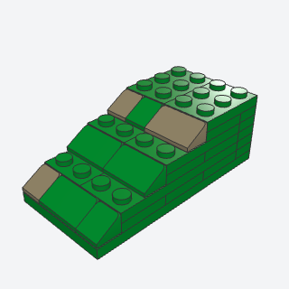
hillsideGround rising in terraces two plates high, each front softened by cheese slopes in grass and bare earth.
A builder reaches for it to make a gentle hill or bank instead of a flat baseplate.
Note: At large sizes it may use a 2 x 14 plate, made in Green in only one or two sets.
x, y, z, length, steps, tread, seed, color, earth, titlebatch-3/hillside.py85984 + 54200 + 3020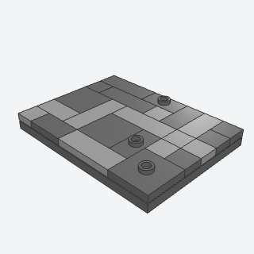
flagstone_pavingCrazy paving of tiles in mixed sizes and two grays laid at random, with a few jumper plates and bare studs.
A builder reaches for it for courtyards, quays, garden paths, and worn floors.
x, y, z, length, depth, seed, colors, bumps, titlebatch-3/flagstone_paving.py3068b + 87580 + 3794b + 63864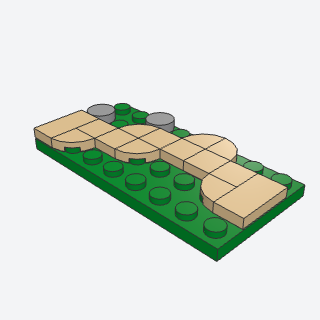
dirt_pathA path two studs wide winding across the grass in tiles, its bends rounded with 1 x 1 corner-round tiles, with pebbles beside it.
A builder reaches for it to lead a path through a garden, park, or field.
Note: Its bends use 1 x 1 corner-round tiles; the 2 x 2 'corner round' tile in the library is the curved quarter-ring, which left holes.
x, y, z, length, wander, seed, color, pebbles, titlebatch-3/dirt_path.py25269 + 3068b + 3070b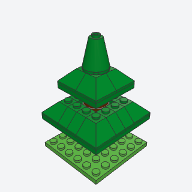
pine_treeA conical fir of tiers of slopes on plates, each tier narrower and held clear of the one below by its core, on a round trunk.
A builder reaches for it for forests and winter scenes where the classic leaf tree looks wrong.
Note: Uses the same tier method as snow_cap (slopes facing out round a core, each tier two studs narrower); here each tier sits on its own plate, held clear of the one below.
x, y, z, tiers, trunk, color, trunk_color, titlebatch-3/pine_tree.py3045 + 3040b + 3942c + 3941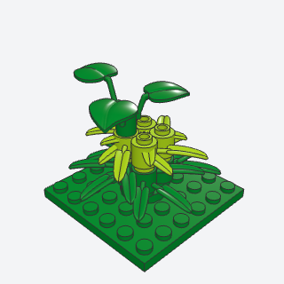
bushA leafy shrub of round bricks with bamboo leaves on a round plate, turned outward in two greens, crowned with broad leaves.
A builder reaches for it to dot gardens, parks, and forest floors with low greenery.
x, y, z, tiers, colors, titlebatch-3/bush.py30176 + 4032a + 6255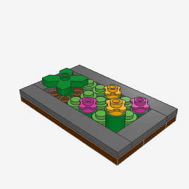
flower_bedA bed of soil plates with a tile border, planted with leaf clumps, flowers on stems, and low leaves, spaced so blooms never touch.
A builder reaches for it to put flowers in front of a house or in a park.
Note: The flower head part (3742) doesn't seat on a plain stud in the validator, so the blooms are round plates with tabs (33291), a stud apart, with low green round plates between.
x, y, z, length, depth, seed, edge, soil, flowers, titlebatch-3/flower_bed.py33291 + 4727 + 6141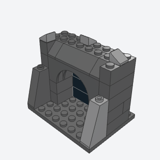
cave_mouthA dark cave entrance in a rock face: an arch on rock jambs, black bricks set back inside, buttresses and broken rock over it.
A builder reaches for it for a cave, a mine, or a sea cave in a cliff.
x, y, z, color, dark, cap, titlebatch-3/cave_mouth.py15254 + 4460b + 3009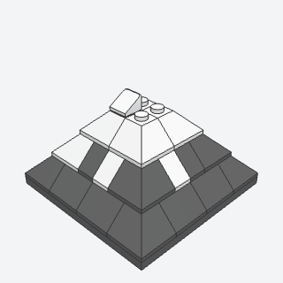
snow_capA mountain peak of stacked tiers of slopes, gray rock below, white snow above, and a ragged snowline between.
A builder reaches for it to top a mountain in a winter or alpine scene.
Note: Uses the same tier method as pine_tree; it stacks the tiers tight and mixes white and gray for the snowline, so it can read as a plain pyramid.
x, y, z, tiers, snowline, seed, rock, snow, titlebatch-3/snow_cap.py3045 + 3039 + 3040b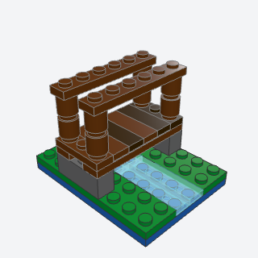
footbridgeA plank bridge over a stream: stringers on stone footings, a deck of tile planks in mixed browns, and handrails on posts.
A builder reaches for it to cross a stream or ditch in a park, farm, or forest.
x, y, z, span, width, seed, wood, stone, titlebatch-3/footbridge.py63864 + 3666 + 3062b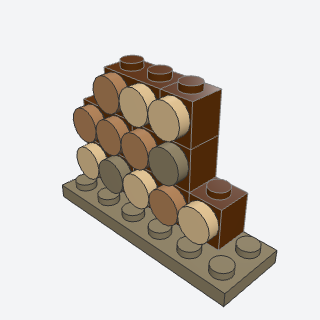
woodpileA stack of cut logs seen end on, round tiles in wood colors on side studs, each row shorter so the pile tapers.
A builder reaches for it beside a cabin, farm, or campsite.
x, y, z, length, rows, seed, wood, ends, titlebatch-3/woodpile.py11211 + 98138 + 87087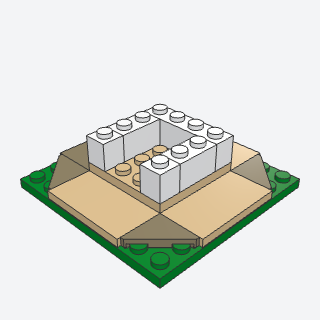
landing_zoneA field of open studs the exact size of a module built apart, framed by a ring of tiles with triangular cut corners.
A builder reaches for it whenever a house or tower is built separately and dropped onto the landscape.
x, y, z, length, depth, seat, path, seed, titlebatch-3/landing_zone.py35787 + 87079 + 3068b